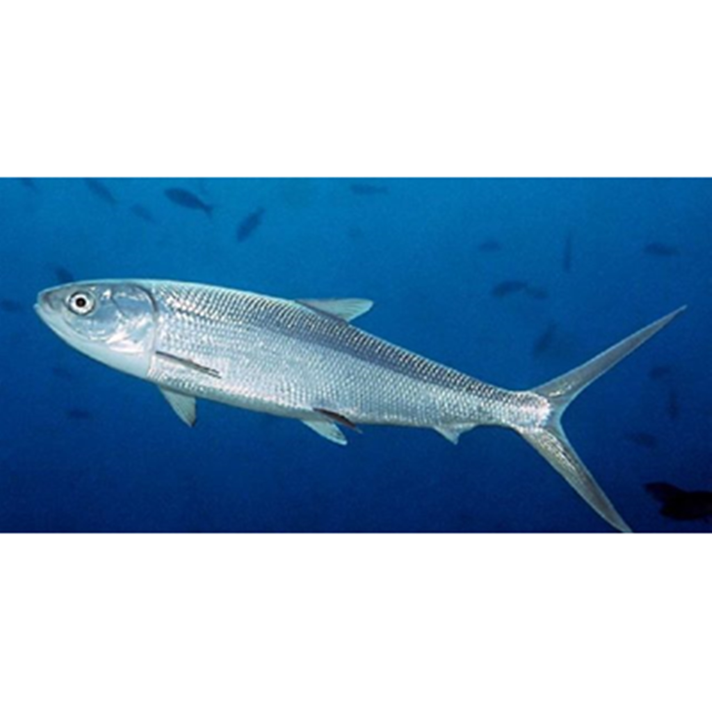

Ikan Bandeng
Ikan bandeng merupakan salah satu jenis ikan hasil laut yang cukup terkenal di kalangan masyarakat Indonesia. Namun biasanya, ikan bandeng lebih terkenal dengan olahan bandeng presto nya, yang memudahkan dalam mengkonsumsinya. Hal ini disebabkan oleh banyaknya duri yang terdapat di dalam tubuh ikan bandeng, sehingga banyak orang yang malas berurusan dengan duri pada ikan bandeng.
Ikan bandeng sendiri merupakan komoditi laut yang cukup menjanjikan di Indonesia, dan sudah mulai dikembangbiakan di dalam tambak – tambak. Ikan ini memiliki tekstur yang kenyal dan gurih, serta memiliki rasa yang khas. Ikan bandeng terkadang menjadi anak tiri, karena kalah pamor dengan ikan salmon, yang sebenarnya memiliki kandungan gizi yang tidak jauh berbeda.
Kandungan Ikan Bandeng (dalam 100 gram)
| Protein (g) | Kalori (Kal) | Lemak (g) | Besi (mg) | Kalsium (mg) | Fosfor (mg) | Vit A (SI) | Vit B1 (mg) | Kolesterol (mg) | BDD (%) |
|---|---|---|---|---|---|---|---|---|---|
| 20 | 148 | 4,8 | 2 | 20 | 659 | 150 | 0,05 | 52 | 80 |
Manfaat Ikan Bandeng
- Menurunkan hipertensi
- Membantu pembentukan otot
- Menurunkan kolesterol
- Membantu pembentukan pertulangan dan gigi
- Membantu pembentukan otot
Hipertensi atau tekanan darah adalah salah satu masalah yang banyak di derita banyak masyarakat, bahkan dunia menderita penyakit hipertensi ini. Kandungan didalam ikan bandeng ini akan membantu menormalkan tekanan darah anda menjadi normal dan juga membantu untuk melancarkan peredaran darah dengan baik.
Kandungan protein dan kalsium yang sangat tinggi sangat memiliki peranan yang sangat tinggi terutamanya memberikan asupan protein dengan baik dan juga membantu pembentukan perototan anda. Selain itu, kandungan ini juga akan membantu meningkatkan perototan atau mengencangkan otot, pembesaran otot, dan juga lainnya.
Kandungan lemak tak jenuh yang didalam ikan bandeng ini juga dapat membantu untuk menurunkan kolesterol anda, selain itu juga mencegahnya penumpukan lemak dalam tubuh yang memicuh kegemukan bahkan keobesitasan dalam tubuh anda.
Kandungan kalium dan kalsium juga masih berguna dan bermanfaat dalam pembentukan tulang gigi maupun pertulangan lainnya. Kandungan ini akan memberikan asupun pertumbuhan tulang, meningkatkan daya tahan pertulangan, dan juga memperbaiki pertulangan yang rusak serta juga sangat baik untuk pertumbuhan gigi. Biasanya ikan bandeng ini diolah dengan baik, untuk anak – anak yang masih dalam pertumbuhan dan perkembangan.
Kandungan protein dan kalsium yang sangat tinggi sangat memiliki peranan yang sangat tinggi terutamanya memberikan asupan protein dengan baik dan juga membantu pembentukan perototan anda. Selain itu, kandungan ini juga akan membantu meningkatkan perototan atau mengencangkan otot, pembesaran otot, dan juga lainnya.